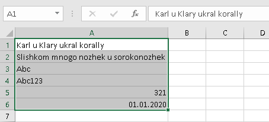
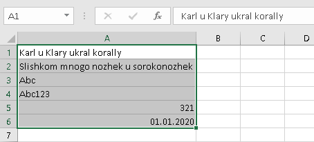

Посмотреть скриншоты


Добро пожаловать на официальную страницу проекта. Здесь Вы можете скачать установочный файл. Больше информации о проекте, а также запросы на новые функции, сообщения о проблемах, исходный код - на странице проекта на GitHub
Для установки надстройки скачайте и запустите установочный файл.
Если возникнет проблема с установкой из-за сертификата, необходимо импортировать
сертификат следующим образом:
Откройте свойства файла setup.exe, откройте вкладку "Цифровые подписи" и импортируйте сертификат:
Для удаления надстройки с компьютера:
Альтернативно, можно использовать классическую Панель управления:
Преобразовать числа, сохраненные в виде текста, в числовой формат.
Заменить русские символы по таблицам соответствия.
Заменить весь русский алфавит на английский. Например, буква "Ж" заменится на "Zh", а буква "Щ" - на "Shch". Основано на документе ИКАО 9303.
 

Заменить схожие по верхнему регистру буквы алфавитов: Аа, Вв, Ее, Кк, Мм, Нн, Оо, Рр, Сс, Тт, Уу, Хх.
Переписать числовые значения в текст с расшифровкой
- На русском
- На английском
- На
французском


Переключить регистр для текстовых значений в выделенных ячейках по схеме:Абвгд -> абвгд
-> АБВГД


Очистить текстовое содержимое выделенных ячеек от лишних пробелов. Удаляет повторные пробелы и переносы строк, а также начальные и конечных пробелы в ячейках, имеющих текстовый формат.


Снять защиту со всех листов открытой книги, как и защиту всей книги, в отсутствие пароля, а также разблокировать VBA проект (при его наличии), на который установлен пароль. Функция не распространяется на зашифрованные книги.
Устанавливить цвет ячеек, которые содержат повторяющиеся значения, в выделенном диапазоне. Различные цвета соответствуют разным группам дублей.
Отменить объединение ячеек и заполненить их исходым значением.

Найти все ячейки в выделенных ячейках, которые содержат ошибки вычислений:
Виды ошибок в MS Excel:
#Н/Д
#ИМЯ?
#ДЕЛ/0!
#ССЫЛКА!
#ЗНАЧ!
#ЧИСЛО!
#ПУСТО!
Копировать в буфер обмена выделенный фрагмент как таблица Markdown.
Проверить значения ячеек в выделенном диапазоне на соответствие определённому
формату.
Поддерживаемые форматы:
- Число
- Дата
- ИНН ФЛ* (12 цифр, с двумя проверочными цифрами)
- ИНН ЮЛ* (10 цифр, с одной проверочной цифрой)
- Текст для XML (отсутствие символов < и > и иных невалидных для содержимого XML)
* - Корректность ИНН не гарантирует существование организации или физического лица,
которому бы принадлежал этот ИНН

Сгенерировать пример XML-файла по xsd-схеме. Позволяет получить наглядное представление о структуре xml-файла при наличии XSD-файла со схемой. Например, для приведённой ниже схемы
<?xml version="1.0" encoding="UTF-8" ?>
<xs:schema xmlns:xs="http://www.w3.org/2001/XMLSchema">
<xs:element name="КорневойЭлемент">
<xs:complexType>
<xs:sequence>
<xs:element name="Заголовок" type="xs:string"/>
<xs:element name="Адресат">
<xs:complexType>
<xs:sequence>
<xs:element name="Имя" type="xs:string"/>
<xs:element name="Адрес" type="xs:string"/>
<xs:element name="Город" type="xs:string"/>
<xs:element name="Страна" type="xs:string"/>
</xs:sequence>
</xs:complexType>
</xs:element>
<xs:element name="Элемент" maxOccurs="3">
<xs:complexType>
<xs:sequence>
<xs:element name="Название" type="xs:string"/>
<xs:element name="Описание" type="xs:string" minOccurs="0"/>
<xs:element name="Количество" type="xs:positiveInteger"/>
<xs:element name="Цена" type="xs:decimal"/>
</xs:sequence>
</xs:complexType>
</xs:element>
</xs:sequence>
<xs:attribute name="Идентификатор" type="xs:string" use="required"/>
</xs:complexType>
</xs:element>
</xs:schema>
Будет сформирован такой xml-файл:
<КорневойЭлемент xmlns:xsi="http://www.w3.org/2001/XMLSchema-instance" Идентификатор="Идентификатор1">
<Заголовок>Заголовок1</Заголовок>
<Адресат>
<Имя>Имя1</Имя>
<Адрес>Адрес1</Адрес>
<Город>Город1</Город>
<Страна>Страна1</Страна>
</Адресат>
<Элемент>
<Название>Название1</Название>
<Описание>Описание1</Описание>
<Количество>1</Количество>
<Цена>1</Цена>
</Элемент>
<Элемент>
<Название>Название2</Название>
<Описание>Описание2</Описание>
<Количество>79228162514264337593543950335</Количество>
<Цена>-79228162514264337593543950335</Цена>
</Элемент>
<Элемент>
<Название>Название3</Название>
<Описание>Описание3</Описание>
<Количество>2</Количество>
<Цена>79228162514264337593543950335</Цена>
</Элемент>
</КорневойЭлемент>
Проверить соответствие xml-файла на основе XSD-схемы. Список ошибок будет выведен на лист в новой книге MS Excel.
Пример отчёта о проверке:
| Уровень | Элемент | Ошибка |
|---|---|---|
| Error | Город | Элемент "Адресат" имеет недопустимый дочерний элемент "Город". Список ожидаемых элементов: "Адрес". |
| Error | Количество | Элемент "Количество" недействителен: значение "-5" недействительно с точки зрения его типа данных "http://www.w3.org/2001/XMLSchema:positiveInteger" — Значение "-5" недопустимо мало или недопустимо велико для PositiveInteger. |
| Error | Цена | Элемент "Цена" недействителен: значение "не число" недействительно с точки зрения его типа данных "http://www.w3.org/2001/XMLSchema:decimal" — Строка "не число" не является допустимым значением Decimal. |
Отменить последнее действие, совершённое с помощью данной надстройки. Отмена возможна для некоторых функций в разделах 'Преобразование значений' и 'Форматирование значений' и только, если диапазон ячеек не редактировался после совершения действия.